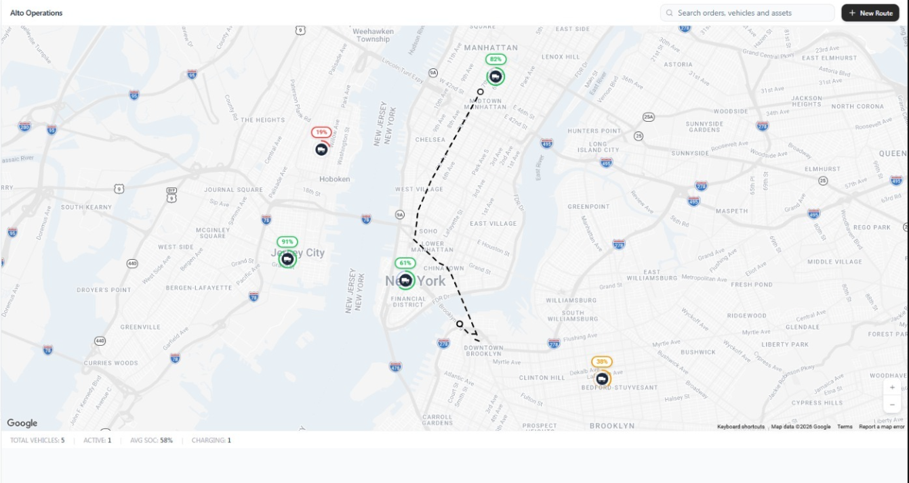

Real-time routing, charging optimization, and risk prediction — all in one platform. Built for fleet operators who can't afford a missed SLA.
A live picture of your entire fleet — GPS position, battery, ETA, risk score — refreshed every few seconds. Click a vehicle and you have the full context in a single panel.

Before a single vehicle moves, six purpose-built agents score the route from every angle. A storm warning, a clogged DCFC, a tightening SLA window — they all surface in one number.
Route multiple fleets simultaneously — zero charger conflicts, dynamic priority resolution, and cross-fleet SLA balancing.
Fleet A's Vehicle #3 and Fleet C's Truck #7 both route to Downtown Charger at 14:22. The Coordinator detects the clash 40 minutes early — staggers Fleet C by 18 minutes. Zero queue, both SLAs intact.
Fleet B's Van #2 breaks down at 11:05. Alto finds three nearby idle vehicles across Fleet A and C, auto-reassigns four pending stops, customers notified within 90 seconds.
A high-priority medical route enters Fleet C. Alto elevates monitoring to critical, pre-books charger slots along the corridor, and clears conflicting Fleet A routes — automatically.
Every charger on the route is monitored continuously — connector type, max kW, live availability, queue time. When a station fails mid-route, Alto reroutes around it before the driver notices.
SOC, speed, altitude, and energy consumed plotted against a clean timeline. Geofence crossings and charging events are flagged inline so anomalies surface themselves.
Run any combination of vehicle config, departure time, and weather against your network. Compare current vs. simulated side-by-side in seconds — no road, no risk.
Live status, battery condition, and maintenance flags for the entire fleet. Sort by anything. Act on whichever vehicle needs you most.
Define coverage by radius, polygon, or ZIP — then overlay live demand. Coverage gaps light up in amber and red so you know exactly where to put the next depot.
A single dashboard that aggregates every signal — on-time probability, vehicles at risk, active routes — and pulses critical alerts the moment thresholds are crossed.
From a pilot of ten vehicles to a continental operation. No per-driver fees, no quarterly minimum.
Onboard your first ten vehicles in under an hour. No card, no commitment.